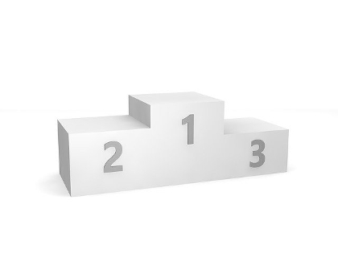

Quand on considère une collection $l$ de $n$ éléments, triée dans l'ordre croissant :
En fonction du principe énoncé ci-dessus, écrire l'algorithme de tri par sélection.
Est-ce que l'algorithme suivant termine ?
Algorithme : "Tri par sélection"
Entrée : l : une collection de n éléments
Sortie : Aucune
Effet de bord : l est triée
Début
Pour i de 0 à n - 1
# définir le premier élément comme minimum
minimum ← l[i]
Pour j de i à n - 1
Si l[j] < l[i] alors
minimum ← l[j]
Finsi
FinPour
# placer element minimum
l[i] ← minimum
FinPour
FinL'algorithme "Tri par sélection" contient deux boucles, il s’agit donc de vérifier qu’elles se terminent.
$n - 1 - i$ est un variant pour la $1^{ière}$ boucle.
$n - 1 - j$ est un variant pour la $2^{ième}$ boucle.
Ce sont 2 variants de boucle, i.e une quantité :
En conclusion, l'algorithme "Tri par sélection" se termine.
Y-a-t-il un meilleur des cas ? pire des cas ?
Exprimer la complexité, en fonction de la taille de la collection et du nombre de comparaisons.
Exprimer la complexité, en fonction de la taille de la collection et du nombre d'échanges.